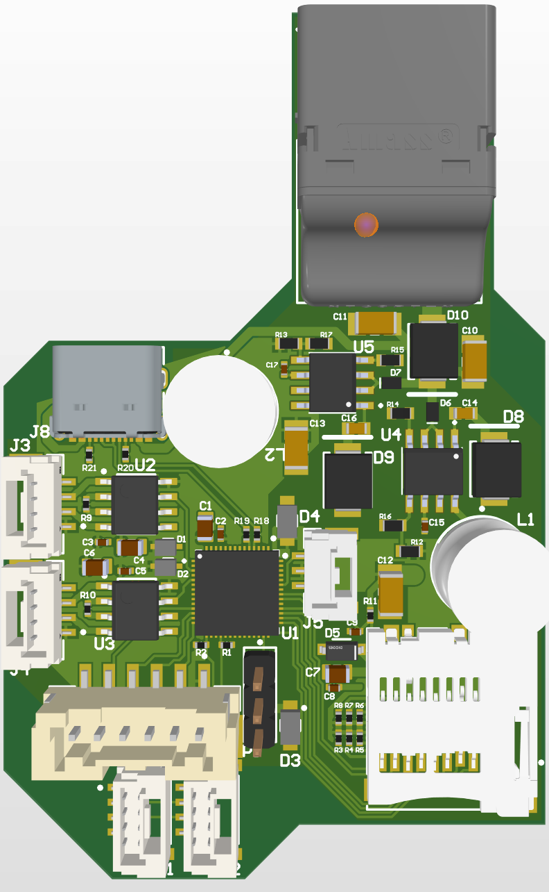
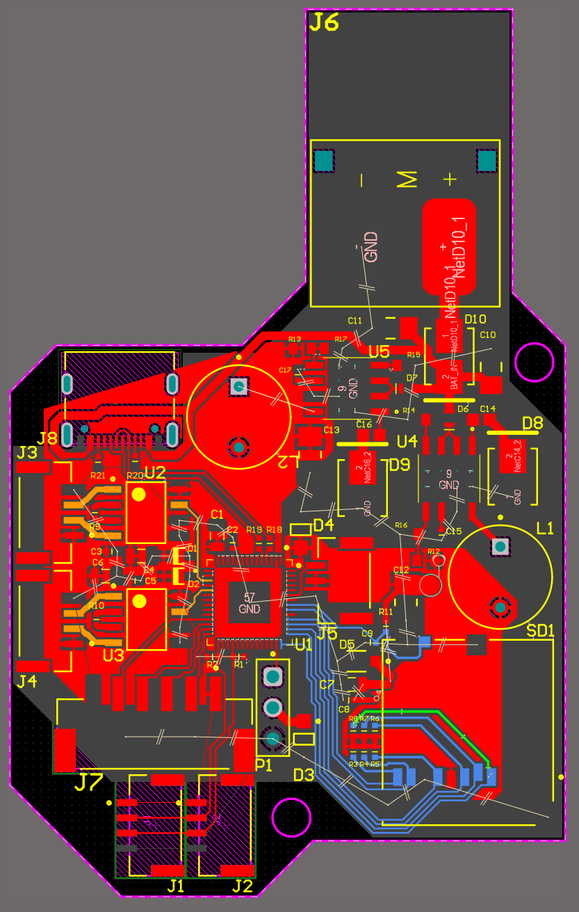
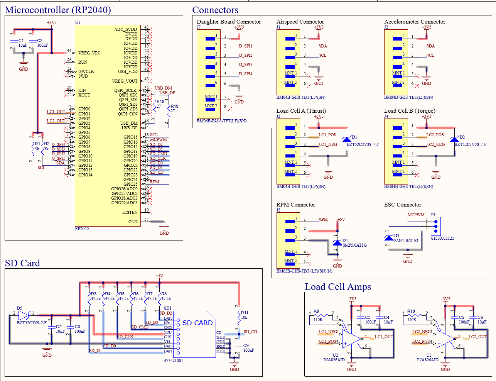
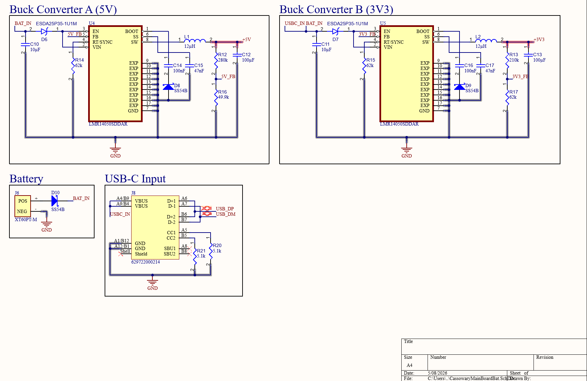
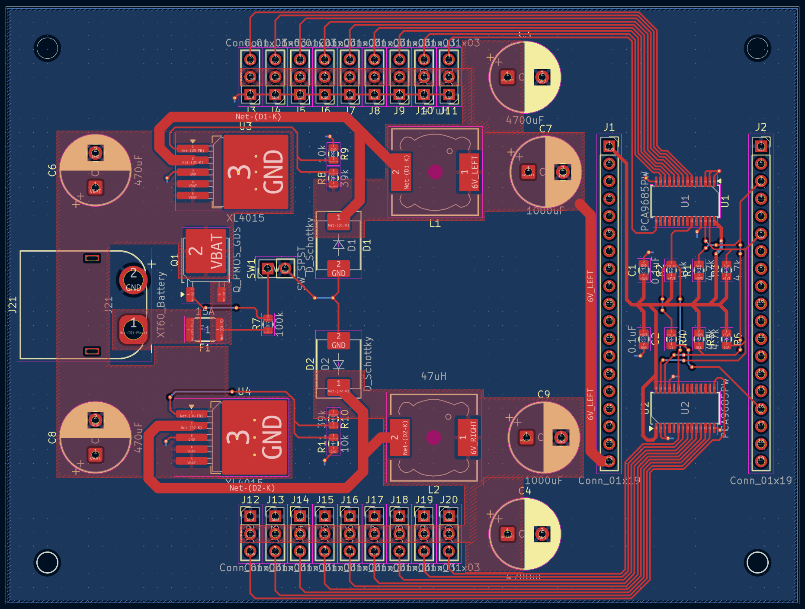
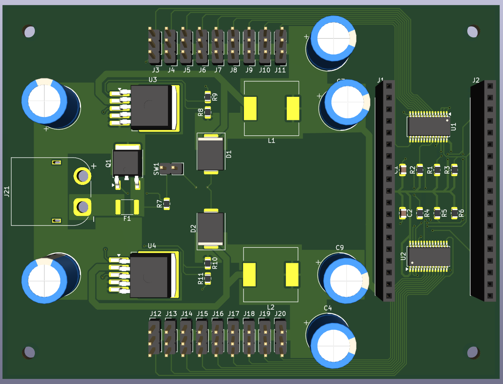
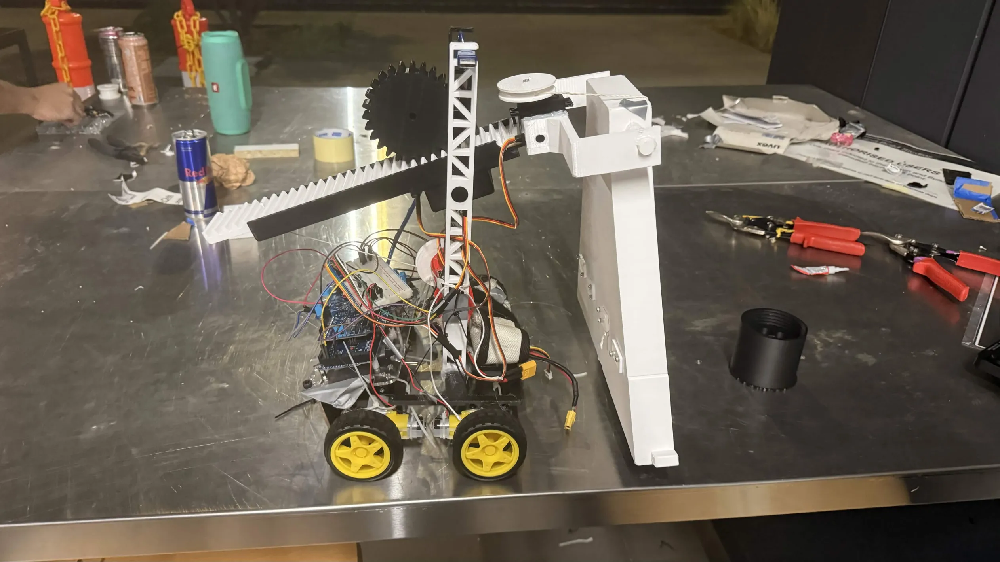
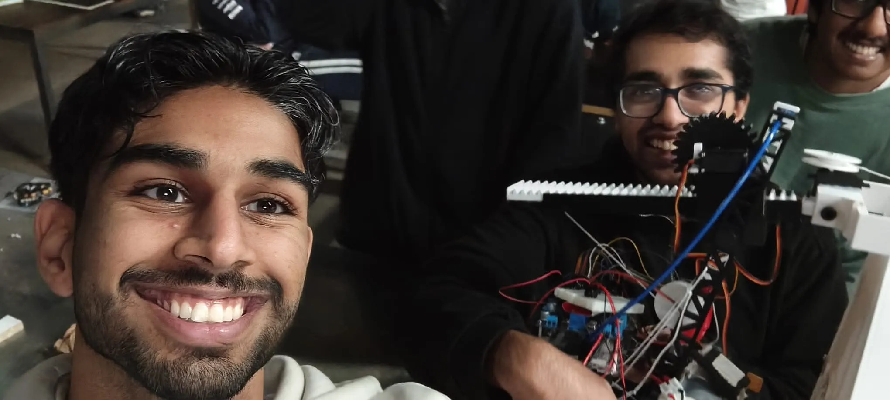

Mechatronics engineering undergraduate at Monash University and co-founder of ARES Technologies. PCB design, FPGA and embedded systems, robotics and computer vision.
High-speed data acquisitionAltium DesignerMixed-signal PCBSignal integrity
As a member of the Monash Unmanned Aerial Systems electronics team, I am responsible for the Measurement & Logging Board for Project Cassowary, a high-fidelity thrust test stand used to characterise drone propulsion systems.
PCB design and hardware architecture

Board 1, 3D render

Altium layout

Analog front end

Power and logic
Role
I led the hardware development for the Measurement & Logging hub: presiding over design reviews with industry representatives, selecting high-precision components (Texas Instruments ADCs and instrumentation amplifiers), and routing a 4-layer PCB in Altium Designer that keeps sensitive analog signals away from high-current motor noise.
Technical challenges
Capturing thrust and torque at 50 kS/s needs a 0.1% precision analog front end. I used the INA826 instrumentation amplifier to boost millivolt load-cell signals while rejecting interference from 120 A motor surges, and a dual-rail LMR14050 buck converter system for independent 3.3 V and 5 V rails so the RP2040 logic stays protected from back-EMF spikes.
Specifications
Acquisition rate
50 kS/s
Front-end precision
0.1%
Instrumentation amplifier
Texas Instruments INA826
Power regulation
Dual-rail LMR14050 buck converters (40 V rated)
Logic rails
Independent 3.3 V / 5 V domains
Microcontroller
RP2040
Board stack-up
4-layer, routed in Altium Designer
Supply under test
4S LiPo, 16.8 V peak
Design review insight. During the V3 review we checked the power architecture against the real propulsion supply. Confirming a 4S LiPo (16.8 V peak) validated the 40 V-rated LMR14050 converters: more than a 2× safety margin without over-engineering, which also kept fabrication cost down.
Project ECKO
ARES Technologies. Hardware and PCB design. 2026 – present
In active development
Assistive technology4-layer PCBAltium DesignerPower integrityEmbedded systems
A head-worn assistive device that converts distance into touch. Time-of-flight sensors measure the distance to surrounding objects, and an array of 32 haptic motors renders those measurements as vibration, so a visually impaired wearer can perceive obstacles and room layout. I am responsible for the 4-layer control board.
Board bring-up is in progress. The schematic is complete and routed in Altium Designer; photographs and test data will be published once the first boards return from fabrication.
The challenge
A cane or guide dog mostly detects obstacles at ground level and within arm's reach, leaving head-height hazards and the broader layout of a space hard to perceive. Rendering that through touch needs a high actuator count in a compact, USB-powered, head-worn assembly.
The time-of-flight sensors ship with a single fixed I²C address, so they cannot share a bus directly. And 32 motors switching together generate transients that can disrupt the 2.4 GHz radio and corrupt the sensor bus.
Engineering solution
An I²C multiplexer driven by a reset line from the ESP32-S3 selects each sensor onto the bus in turn. Motor drive uses two PCA9685 16-channel PWM controllers feeding four ULN2803C Darlington arrays.
To contain switching noise I specified a 4-layer stack-up with a solid ground plane on L2 and a split 3V3 / +5V_MOT plane on L3, so every power and ground pin reaches its plane through a via rather than a trace. The logic rail is fed through a ferrite bead and a dedicated regulator, with an antenna keep-out across all four copper layers.
Specifications
Microcontroller module
ESP32-S3-WROOM-1
Distance sensing
Time-of-flight sensors behind an I²C multiplexer
PWM generation
2 × PCA9685 (16 channels each)
Motor drive
4 × ULN2803C Darlington arrays
Haptic channels
32
Board stack-up
4-layer, 1.6 mm, 0.5 oz inner copper
Plane configuration
L2 solid ground; L3 split 3V3 / +5V_MOT
Design rules
0.15 mm minimum clearance, DRC clean
Power input
USB-C with ESD array, fuse, reverse-polarity diode, 470 µF bulk
Project JAEGAR
Co-founder, ARES Technologies. Mechanical design and power electronics. 2025 – 2026
Operational
Bio-mimetic roboticsHigh-current power distributionSolidWorks CAD
An anthropomorphic robotic arm that replicates human motion in real time. The goal was a fluid, high-torque system that can mimic delicate hand gestures for medical and teleoperation uses, on the way to a full-scale humanoid that mirrors its operator.
Phase 1: finger actuation iterations
Finger V1Finger V2Finger V3Finger V4
Phase 2: full hand assembly
Hand V3Hand prototype
The challenge
When all five fingers actuated at once the power surge browned out standard microcontrollers. Mapping linear servo travel onto the non-linear rotation of finger joints also needed careful linkage design.
Engineering solution
I designed a dedicated power distribution bus, separate from the logic controller, to isolate noise and manage the load. Mechanically we iterated a tendon-driven design in SolidWorks, routing high-tension nylon line through 3D-printed phalanges to mimic muscle contraction. The finger went through four design generations.
A hexapod robot built to assist with daily tasks, surveillance and exploration. It served as a testbed for inverse kinematics and custom PCB fabrication.
Design evolution: leg mechanisms
Leg V1Leg V2Leg V3
Chassis, integration and electronics
V1V1 CADV2 underside

PCB schematic

PCB 3D view
The challenge
Coordinating 18 servos, three per leg, into a smooth tripod gait. Breadboard wiring was too bulky and unreliable for a moving chassis and kept failing mid-walk.
Engineering solution
I wrote a custom inverse kinematics solver in Python that computes every joint angle from a desired foot coordinate (x, y, z). To fix the wiring, we moved the servo drivers and power management onto a custom KiCad PCB integrated into the chassis, cutting weight by 20%.
Specifications
Legs and degrees of freedom
6 × 3 (18 joints)
Kinematics solver
Custom inverse kinematics, Python
Gait
Tripod
Controller board
Custom PCB designed in KiCad
Weight reduction
20% following board integration
Perception
Camera with OpenCV object recognition
Mechanical
SolidWorks CAD, FDM printing, three leg revisions
Project SENTINEL
Co-founder, ARES Technologies. Vision pipeline and control. 2025
Operational
Computer visionPython / OpenCVReal-time tracking
An automated defence simulation using computer vision: it tracks aerial targets and aligns a turret in real time without human input. Exhibited at the Monash DeepNeuron Tech Expo.
MK1MK4 showcase
The challenge
Processing video fast enough to track a moving object while also driving stepper motors. Latency between detection and motion made tracking lag behind the target.
Engineering solution
A multi-threaded Python architecture: one thread for the heavy OpenCV processing, a separate lightweight thread for motor control. The turret predicts the target's path by vector analysis instead of reacting to its last position, which noticeably improved accuracy.
Specifications
Vision stack
Python with OpenCV
Tracking method
Frame-to-frame tracking with vector path prediction
Software architecture
Multi-threaded, vision separated from motor control
Turret actuation
Stepper motors
Warman Design & Build Competition
Student engineer, MMA2001 Design 1 (Monash University). Team of 5. 2026
Completed. 10th of 160 teams
Circuitry and hardware logicAutonomous navigationArduino MegaAcademic competition
Built for the Warman Design & Build Competition, where our team placed 10th out of 160. The brief: a system no larger than 400 × 400 mm that, from a single start action, autonomously collects six randomly placed payloads, delivers them to a hopper and finishes in the end zone within 120 seconds.
Competition run


The challenge
Against 160 other teams we could not afford a single system failure during testing. The job was an electrical architecture that stayed reliable under competition conditions, without over-engineering the mechanics.
Engineering solution
Robust circuitry and clean hardware logic. I designed the automatic navigation system that lets the robot detect deviation and self-correct mid-run without operator input. Keeping the mechanical design strictly functional and spending our time on electrical integration and control logic gave us 100% system reliability in the final evaluations.
x72 16-bit processor on FPGA
ECE2072 Digital Systems (Monash University). Team of 2. 2026
Completed. All four tasks functional
VerilogFPGAQuartus PrimeHardware verification
A 16-bit multi-cycle processor written in Verilog and implemented on a Terasic DE10-Lite (Intel MAX 10) board. It runs an eight-instruction set over a shared 16-bit bus and, in its final form, executes stored programs from on-chip ROM with conditional branching. Our demo program computes 5! with a loop of multiply, add and branch instructions and shows the result on the seven-segment displays.
The challenge
Every instruction shares one bus, so the control unit has to sequence the registers, ALU and bus multiplexer correctly across four clock ticks. One wrong enable signal corrupts a result silently, which makes verification as important as the design.
Engineering solution
I built the control unit, a one-hot tick FSM that needs no decoding, a width-parameterised register reused for every register in the design, the sign extender and the board top level. Self-checking testbenches compute each expected result independently: 40,323 checks over 2,267 instructions passed with no failures, and the design was then confirmed on hardware.
Specifications
Architecture
16-bit, multi-cycle, shared bus, 8 registers
Instruction set
movi, add, addi, sub, mul, ssi, disp, bez
Target device
Intel MAX 10 (DE10-Lite)
Toolchain
Verilog, Quartus Prime Lite, self-checking testbenches
ECE2071 Systems Programming (Monash University). Team of 4. 2026
Completed. 39.75 / 40 in demonstration
Embedded CSTM32DMA / SPI / UARTSignal processing
A two-microcontroller audio recorder. One STM32L432 samples an analogue audio input at about 44.1 kS/s and passes the samples over SPI to a second STM32, which streams them over UART to a PC command-line tool. The tool records manually or triggers from an ultrasonic distance sensor, and saves each recording as a WAV file with CSV data, waveform, FFT and spectrogram plots.
The challenge
Holding a CD-quality sample rate end to end leaves little headroom: the UART link to the PC is the bottleneck, and a single corrupted packet audibly damages the recording.
Engineering solution
Data moves by DMA on both microcontrollers so the CPU is free between buffers. Two 12-bit samples are packed into three bytes to cut UART bandwidth, and every packet carries a CRC-8 that the PC checks so corrupted packets are dropped rather than written to the audio. A moving-average filter with outlier rejection cleans the signal. Code was managed in Git with feature branches and reproducible Python environments.
Specifications
Microcontrollers
2 × STM32L432KC
Sample rate (measured)
44.1 kS/s, 12-bit
Links
SPI with DMA between boards; UART with DMA to PC
Integrity
CRC-8 per packet, invalid packets discarded
Trigger modes
Manual, or ultrasonic distance trigger
Outputs
WAV, CSV, waveform, FFT spectrum, spectrogram
Regulated 3.3 V power supply tender
ECE2131 Electrical Circuits (Monash University). Team of 5. 2026
Completed. Tender scored 94.7%
Analog circuit designLTspiceSoldered prototypeCost analysis
A tender response for a regulated 3.3 V supply to power an STM32L432-based embedded audio system. The design was analysed, simulated in LTspice, built as a soldered prototype and costed for mass production. Markers singled out the report and the layout of the soldered prototype.
The challenge
Hold a stable output under both steady and switching loads, survive a reversed or excessive input, and come in under $5 AUD per unit at volume using parts available from more than one supplier.
Engineering solution
An LM317 regulator with a precision resistor divider and input, output and adjustment capacitors to suppress ripple. A clamping diode gives reverse-polarity protection, and the regulator's headroom plus a Zener clamp handle overvoltage. Tested at DC and with dynamic loads at 1 MHz and 80 MHz.
A model that predicts how people rate the aesthetic quality of photographs, as the final task of an assignment that also covered robust (Huber) regression, gradient descent with momentum and outlier detection.
The challenge
Aesthetic judgements depend on composition, colour and texture more than on what an object is, so the final-layer features of an image-classification network are a weak fit.
Engineering solution
A frozen, pretrained ResNet-50 with features pooled from all four of its stages rather than just the last, feeding an RBF kernel ridge regressor tuned by 5-fold cross-validation. Expected error fell to an MSE of about 0.30, against 0.50 for predicting the mean and 0.40 for the standard last-layer approach.
Specifications
Feature extractor
Frozen ResNet-50, mean and std pooled from all four stages
Model
RBF kernel ridge regression
Tuning
5-fold cross-validation
Expected test MSE
~0.30 (mean baseline ~0.50)
Stack
Python, NumPy, scikit-learn, Jupyter
Self-play card game AI agent
AI agent developer, Pokémon TCG AI Battle Challenge (Kaggle). 2026
Completed
PythonMonte Carlo tree searchGenetic algorithmsSelf-play RL
An agent that autonomously constructs and refines a competitive deck from a pool of more than 18,000 cards, trained through over 250,000 simulated self-play battles to produce a high-win-rate, meta-resistant deck.
The challenge
A static heuristic evaluates one option at a time and plays greedily. It cannot value a move whose payoff only arrives later in the turn, so it loses to multi-step combinations. Both the deck and the play policy also have to evolve against a shifting meta.
Engineering solution
Monte Carlo tree search with UCB1 selection evaluates candidate turn actions by rollout, combined with a beam search over multi-step sequences that keeps the top-K partial plans. A genetic algorithm evolves about 20 weighted terms of the board-evaluation heuristic, using self-play tournaments as the fitness function so the opponent improves alongside the agent.
Specifications
Turn planner
Monte Carlo tree search (UCB1) with beam search
Heuristic optimisation
Genetic algorithm over about 20 weights
Training volume
250,000+ self-play battles
Card pool
18,000+ cards
Endeavour
Founder. Cross-platform iOS and Android application. 2026 – present
In active development
Cross-platform mobileiOSAndroidProduct design
A habit-tracking app built around competitive, gamified mechanics. Streaks, leaderboards and head-to-head challenges create social accountability between users instead of relying on individual motivation alone.
In active development. Screenshots and a build log will be published as features are completed.
All machines
Every project in the arcade, in walking order. Open one here if you would rather not walk.
Experience
Electronics team member · Monash Unmanned Aerial Systems
2026 – PRESENT
Leading hardware development of the Measurement & Logging Board used to characterise heavy-lift drone propulsion systems on Project Cassowary.
Engineered a 4-layer mixed-signal PCB in Altium Designer, isolating sensitive analog front ends from 120 A motor EMI to preserve signal integrity under load.
Presented the board through formal design reviews with industry representatives, defending component selection and power architecture.
Co-founder · ARES Technologies (private R&D team)
2025 – PRESENT
Co-founded a private engineering team building autonomous robotic systems and bio-mimetic hardware from concept to working prototype.
Selected to exhibit prototypes at the Monash University DeepNeuron Tech Expo, presenting alongside industry leaders including Microsoft, Telstra and Blackmagic Design.
Delivered four platforms spanning dexterous manipulation (JAEGAR), legged locomotion (SCORPION), computer vision (SENTINEL) and assistive hardware (ECKO).
Placed 10th out of 160 teams in the Warman Design & Build Competition.
Designed an automatic navigation system enabling the robot to detect deviation and self-correct mid-run without operator intervention.
Delivered a stable mechanical platform with a lean, low-power electrical architecture, achieving 100% system reliability during final evaluations.
AI agent developer · Pokémon TCG AI Battle Challenge (Kaggle)
2026
Built an agent that constructs and refines a competitive deck from a pool of over 18,000 cards.
Implemented Monte Carlo tree search (UCB1) and beam search planning in place of static greedy heuristics, with a genetic algorithm evolving about 20 board-evaluation weights across 250,000+ self-play battles.
Founder · Endeavour, iOS & Android app
2026 – PRESENT
Designing and building a cross-platform habit-tracking app with competitive, gamified features structured around social accountability.
Technical skills
Hardware engineering
Mixed-signal PCB design (Altium Designer, KiCad), 4-layer stack-ups and split-plane power distribution, precision analog front ends, high-current power distribution, signal integrity and EMI mitigation, linear regulator design, circuit simulation (LTspice), hand-soldering (THT and SMD).
Digital and embedded systems
FPGA design in Verilog (Quartus Prime, Intel MAX 10), self-checking testbenches, timing and resource analysis, STM32 firmware in C (HAL, DMA, SPI, UART, ADC, timers), assembly programming, ESP32-S3, RP2040, Arduino.
Robotics and control
Inverse kinematics, PID control loops, PWM signal modulation across 18+ channels, autonomous navigation systems, computer vision and object tracking, microcontroller integration, embedded C++.
CAD and prototyping
SolidWorks complex assemblies, Onshape, rapid prototyping via FDM printing, design for manufacture and tolerance analysis, linkage and tendon mechanism design, test rig and fixture design.
Software and AI
Python (OpenCV, NumPy, scikit-learn, multi-threading), C for systems programming, C++ (object-oriented design, embedded firmware), Git, machine learning (kernel methods, transfer learning from pretrained CNNs, cross-validation), search and optimisation (Monte Carlo tree search with UCB1, beam search, genetic algorithms), self-play reinforcement learning, cross-platform mobile development for iOS and Android.
Interests. An early interest in digital logic developed through complex Redstone circuitry, including logic gates and hexadecimal and binary decoders. High School Robotics Club member, Years 9–10.